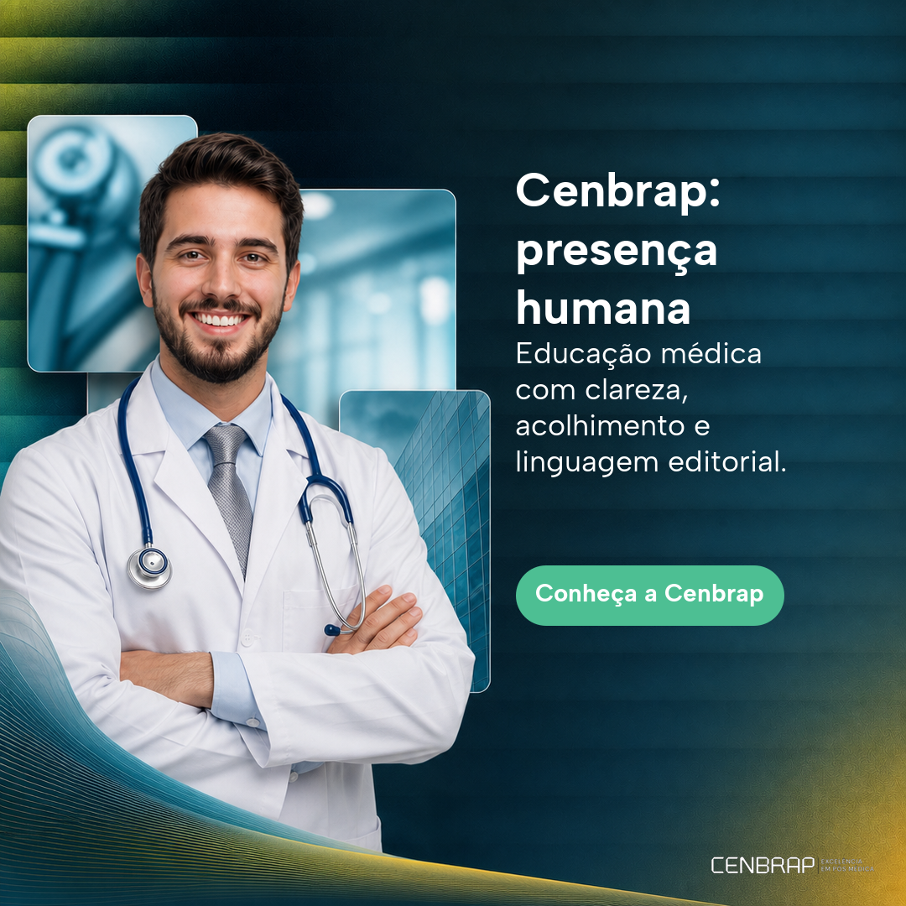

1:1 · 1:1-0c4e5524-618a-4fc3-838a-a49b4da0cb2a
Headline: Cenbrap: presença humana
Body: Educação médica com clareza, acolhimento e linguagem editorial.
CTA: Conheça a Cenbrap
Modelo: gpt-image-2-2026-04-21 · hash: eb50fcc1093f2e0026218682360b44390d3950309626e3586306374a72dc20b8
Direção: Sem direção congelada
Assets aplicáveis: workspaces/95cd1bfc-0933-45e1-8688-3110a266cb4d/brand-training/84253e84-8487-4406-ab94-a9b66bae58d9-logo_horizontal_negativo2x.png, workspaces/95cd1bfc-0933-45e1-8688-3110a266cb4d/brand-kit/29849209-b4a6-4590-b58d-7a271f68fd53/ca847e0e087d6aeb542d6313.png, workspaces/95cd1bfc-0933-45e1-8688-3110a266cb4d/brand-training/29849209-b4a6-4590-b58d-7a271f68fd53/2b3fd19bf7afb719b2963ada.png, workspaces/95cd1bfc-0933-45e1-8688-3110a266cb4d/brand-training/9c3e1225-6841-44e6-a420-f3fcebdbbfdb-cenbrap_endocrinologiacompersonagem_feed.png · claims: c2cadba1-6a66-4770-9341-a8fd456d2000, 6d3a5df4-56fd-40fc-82f8-d88337eee065, 73fa71ca-b062-47ae-87fc-a36cdaf4f308, 7fc60e89-df95-41bd-88e7-8e40154bf16f, 1d3e3e25-d46b-4093-830f-27480122ad56
Brand Kit do snapshot: {"fonts":["Albert Sans"],"colors":["#26363C","#B7D24B","#F9D678","#0A66D9","#44A6BD","#6A2F1F","#4DBF93","#C35A67","#212E34","#14120F","#C04B6A","#F4C66A","#2BB0E6"],"fontAssets":[{"style":"normal","family":"Albert Sans","sha256":"8fe5d4cf5822d7096d4d17ad781c90f97c745ac13a22be619db74966fba45fda","source":"https://github.com/usted/Albert-Sans — OFL 1.1","weight":400,"assetKey":"workspaces/95cd1bfc-0933-45e1-8688-3110a266cb4d/brand-fonts/d443c41c-6b86-43c6-821f-f66c90e7d48d-albertsans-regular.ttf","approvedAt":"2026-08-13T23:49:40.067Z","uploadedAt":"2026-08-13T23:49:34.641Z","reviewStatus":"approved","approvedByUserId":"FI8LXz2zJBaZ4Fk9gcK5SVARQ9xRYwDp","uploadedByUserId":"FI8LXz2zJBaZ4Fk9gcK5SVARQ9xRYwDp"}],"toneOfVoice":"Modern, friendly and energetic — confident but approachable. Language should be clear, concise and vibrant, prioritizing positive and professional phrasing.","requiredElements":"Always use the specified palette (including gradient treatments) and approved font families; ensure sufficient contrast between logo/text and background; maintain required clear space around the logo; prioritize gradient color application where indicated.","prohibitedElements":"Avoid low‑contrast color combinations; do not alter brand hues or replace the gradient system with unsupported flat colors; no stretching, rotating or adding unapproved shadows/outlines to the logo; do not use non‑brand fonts."}
Inputs enviados ao provider
[
{
"position": 1,
"role": "revision",
"required": true,
"assetKey": "creative-work/761c460f-ddc8-4547-aee0-7017dff4e88b/1786746105301.png",
"label": "Versão 2",
"sourceMimeType": "image/png",
"mimeType": "image/png",
"sha256": "7bcc48571a3a19d19bec61fe324269fa867beaf02b6b395477d835def63cc69e"
},
{
"position": 2,
"role": "brand_identity",
"required": false,
"assetKey": "workspaces/95cd1bfc-0933-45e1-8688-3110a266cb4d/brand-training/29849209-b4a6-4590-b58d-7a271f68fd53/2b3fd19bf7afb719b2963ada.png",
"label": "Cenbrap_Medicina do Trabalho com personagem_Feed.png",
"sourceMimeType": "image/png",
"mimeType": "image/png",
"sha256": "dbb430ac9a9b3ad1a48e8ea8c9205ff823ea1f6a55ed8b6564486934cbf330f1"
},
{
"position": 3,
"role": "brand_identity",
"required": false,
"assetKey": "workspaces/95cd1bfc-0933-45e1-8688-3110a266cb4d/brand-training/9c3e1225-6841-44e6-a420-f3fcebdbbfdb-cenbrap_endocrinologiacompersonagem_feed.png",
"label": "Cenbrap_Endocrinologia com personagem_Feed.png",
"sourceMimeType": "image/png",
"mimeType": "image/png",
"sha256": "44441be315e60879e4c9f6ef8faa2ecd9fdd5a3a272653c710c250126cf5b135"
}
]Prompt congelado
PROVIDER-ONLY ABSTRACT BACKGROUND — VISUAL PROMPT CREATIVE LEVEL: balanced Sibling creative — noticeably new composition while keeping brand identity recognizable. FORMAT: 1:1 DETERMINISTIC TEXT CONTRACT: FORMAT: 1:1 Do not render any visible text, letters, words, labels or CTA in the image. PROVIDER-ONLY LAYER: render only the art-directed visual layer; do not draw any text, logo, wordmark, monogram, brand name, symbol or other brand mark. Non-semantic visual subjects requested by the operator may be rendered. The approved logo and copy are added by the application after generation. Generate only the visual background and leave the right-side composition band visually calm and free of focal content for deterministic text composition after generation. Do not place faces, people, products or other focal subjects inside the right-side composition band; keep requested subjects legible outside that band. Exact brand assets and approved copy will be composited after generation. ABSTRACT COLOR GUIDANCE: Use only these approved palette colors as abstract atmosphere and contrast guidance: #26363C, #B7D24B, #F9D678, #0A66D9, #44A6BD, #6A2F1F, #4DBF93, #C35A67, #212E34, #14120F, #C04B6A, #F4C66A, #2BB0E6 OPERATOR VISUAL DIRECTION (use for visual motifs and composition only; do not reproduce its wording): CENBRAP. Headline: "[approved copy omitted]". Body: "[approved copy omitted]" CTA: "[approved copy omitted]". Crie uma peça editorial quadrada inspirada nas referências reais: um médico em jaleco ocupa o lado esquerdo em retrato fotográfico acolhedor, integrado a dois ou três cards fotográficos arredondados e sobrepostos. O lado direito deve permanecer escuro, aberto e calmo como coluna editorial para o texto. Use textura teal, faixas horizontais e detalhes lime, azul e amarelo suave. Sem texto ou logotipo renderizado pelo provider. Do not infer or reproduce any brand identity from text; the application owns all semantic content and exact assets. PROVIDER-ONLY LAYER OVERRIDE — HIGHEST PRIORITY: Return a brand-safe art-directed visual layer: an atmospheric background plus non-semantic visual subjects explicitly requested in the operator visual direction. Human professionals, portraits, photo crops, editorial cards, shapes and diagrams are allowed when requested. Never add visible text, lettering, numerals, logos, symbols, offers, claims, prices, dates or CTAs. Do not invent products or branded entities. The application owns every visible brand and content layer after generation. Keep the reserved composition band calm and free of focal content.